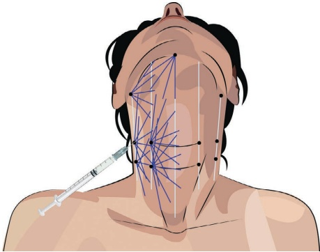
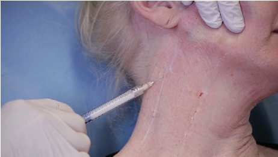
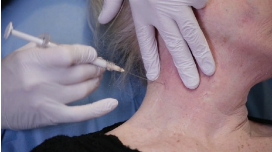
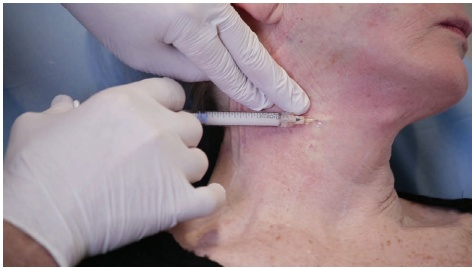
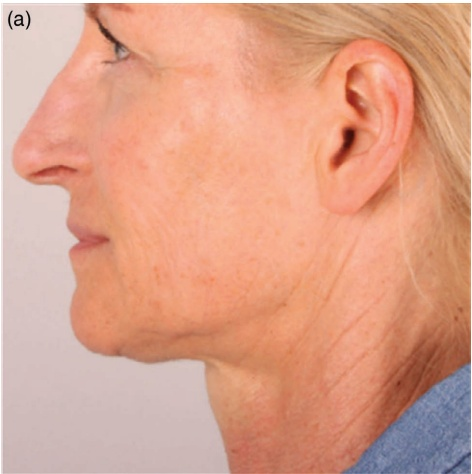
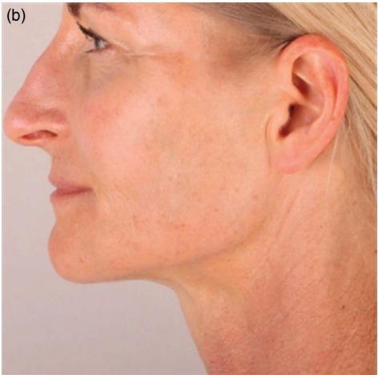

27 颈部、胸部和腹部：颈部再年轻化
颈部、胸部和腹部颈部再塑
JANI VAN LOGHEM
27.1 引言
颈部是日益流行的再塑区域。为了避免与焕新的面部形成对比，患者经常咨询减少衰老迹象的可能性。特别是中线的细小垂直松弛皱纹、水平的颈线和下颏部的下垂区域可能引起患者的关注。应在静态和动态位姿下，从正面和侧面对全脸和颈部进行评估。作为一般性处理，可以先处理下颌缘。可使用羟基磷灰石钙（CaHA）来治疗颈部皮肤的松弛。有关附加技术，请参阅第 32 章关于介质肌内羟基磷灰石钙（mesoCaHA）的内容。
27.2 解剖学
颈部皮肤较薄，应使用高倍稀释的 CaHA。与下颈部几乎没有皮下脂肪相比，下颏脂肪区相对较厚，在下颈部，胸肌筋膜（platysma）几乎直接附着于皮肤上。因此，可以使用非常稀释的 CaHA，因为丢失颗粒到更深层皮下脂肪的风险较低。
27.3 解剖学危险点
需要注意的区域是颈静脉和位于更深处的颈动脉。
27.4 颈部再塑钝性套管针技术 在注射定位方面，参见图 27.1。
27.4.1 分步技术
-
识别并标记从下颌角、垂直中线以及两者之间的垂直线。
-
在水平颈线上，标记进针点。在下颏褶皱处标记一个进针点。
-
进行消毒。考虑在进针点给予局部麻醉。
-
使用 23G 锐针制作预孔。
-
使用高倍稀释的 CaHA，稀释比例为 1:2 或 1:3（1:3 为每 1.5 mL CaHA 混合 0.5 mL 1% 利多卡因与肾上腺素和 4 mL 生理盐水）以及 25G、50 mm 的钝性套管针（图 27.2）。
-
确保整个治疗过程中钝性套管针始终位于真皮-真皮下交界处。


-
用非惯用手将皮肤拉向钝性套管针的方向，并在真皮-真皮下平面内推进钝性套管针（图 27.3）。
-
以扇形技术注入多条逆行线性丝，每条逆行约 0.1 mL（图 27.4）。


-
应进行交叉描绘（Cross-hatching）以改善稀释产品在浅层平面内的均匀分布。
-
不要过度矫正。
-
根据需要用手动按摩使之平滑。
有关使用 CaHA 进行颈部治疗的最终效果，请参阅图 27.5。
27.5 术后护理
可进行轻柔按摩以达到均匀分布，但如果采用低剂量、逆行线性（retrograde linear）高倍稀释 CaHA 的正确技术，则无需按摩。肿胀可能不均匀，应在一天或两天内消退；瘀血即使使用钝性套管针也通常会发生。后续随访计划于三到六个月后进行。
27.6 实现最佳效果的附加治疗
联合使用肉毒毒素 A 型（botulinum toxin type-A）治疗胸肌带和水平颈纹，以及采用浅层真皮下注射的消退技术（blanching technique），用 CaHA（参见本书关于水平颈纹的章节）或软透明质酸进行治疗。其他模式如激光、去角质和局部乳膏也可使该区域受益。

